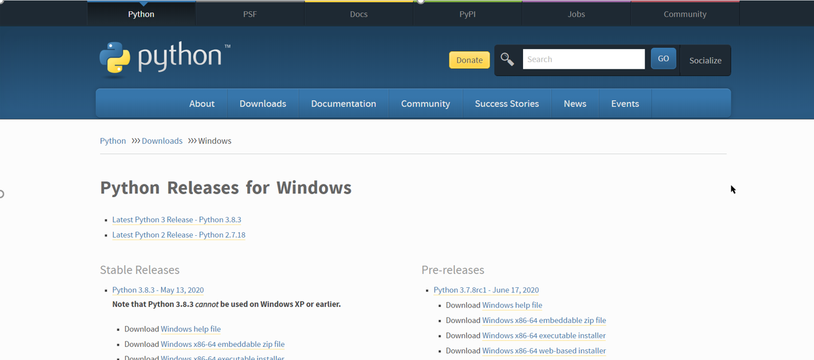

W12-w18assignment亂數分組 <<
Previous Next >> 期末報告
final report
登錄到您的github帳戶並創建一個名為cd2020的個人存儲庫。
- 輸入存儲的文件夾，ex；tmp然後在黑色小窗口中鍵入git clone https://github.com/s40623252/ cd2020。
- 之後再git子模塊添加https://github.com/mdecourse/cmsimde.git
然後使用cd cd2020-> cd cmsimde進入cmsimde文件夾。
- 使用python wsgi.py輸入靜態9443以編輯個人網站信息。
使用git add . 。Commit -m“標題”-> git push上傳剛剛編輯的內容。輸入個人存儲的設置，然後將branch更改為主存儲。
- 更新可攜裝置中的python的版本更新至3.8.2。至python官網
- https://www.python.org/downloads/windows/ Windows x86-64可執行安裝程序安裝至自己可攜帶系統（把pip的選項去掉）。
- 將便攜式系統下的python 3.7.3系統
更新為python 3.8.2將便攜式系統下的python 3.7.3系統更新為python 3.8.2
- 轉到https://www.python.org/downloads/windows/
- 轉到底部，下載Windows x86-64可執行文件安裝程序（頂部和底部分別是Windows x86-64可嵌入zip文件和Windows x86-64基於Web的安裝程序，它們都是嵌入式64位python可執行文件。 。（壓縮文件和64位Internet可執行文件）將不在此更新中使用。
- 然後開始下載。不要檢查點子選項，然後按下一步
- 首先將下載的python 3.8.2放在桌面上，並在y插槽下的數據中添加py382文件夾以方便測試。之後，您可以測試3.8.2的python是否可以正常運行。
- 將新下載的python 3.8.2放置在新創建的py382中。切記不要刪除原始的py373。如果以後執行py382會產生錯誤，則可以使用py373返回原始版本。
- 更改執行文件start_mdecourse.bat
.重新啟動剛剛更新的可執行文件
- 執行python get-pip.py 執行python -m pip安裝flask flask-cors markdown lxml bs4鵜鶘leo
- 。使用範圍檔更改開始路徑（名稱不必更改）
- 執行get-pip.py安裝管理工具接下來執行pip install指令後將pip install Flask / pip install Markdown / pip install lxml/ pip install bs4 / pip install flask_cors/ pip install pelican / pip install leo下載下來
- 
OBS Studio 是個免費且開放原始碼的影音串流直播工具（OBS 全名為 Open Broadcaster Software）可支援 YouTube, YouTube Gaming, Twitch, Facebook Live, Smashcast, DailyMotion, Twitter…等三十多個影音平台與直播服務讓我們輕鬆將電腦中的影片、視窗畫面、遊戲畫面或攝影機、麥克風等裝置的即時影像與內容轉播出去。
OBS Studio 的使用方法很簡單，
我們可以設定多個不同的「場景」每個場景可以事先安排好要顯示哪些圖檔、字幕、影片或擷取哪些輸入裝置或軟體、遊戲的視窗等畫面按下「開始串流」按鈕後即可將你安排的內容即時傳輸到指定的直播平台（如 YouTube 或 Twitch）邊直播還可邊透過麥克風講話或透過 Webcam 拍攝現場畫面。開始直播後任何人只要開啟直播頻道的網址就能馬上看到你精心安排的影音內容。https://briian.com/47680/
We can set a number of different "scenes". Each scene can be arranged in advance which graphics files, subtitles, videos or input devices or software to capture, the game window, etc. Press the "start streaming" button You can transfer the content you arranged to the designated live broadcast platform (such as YouTube or Twitch) in real time while broadcasting live. You can also talk through the microphone or take live pictures through the Webcam. After starting the live broadcast, anyone can open the URL of the live broadcast channel and immediately see your carefully arranged audio and video content. https://briian.com/47680/
今日筆記:
 CD2020 說明 Pyslvs-UI 的下載與基本操作流程{1}...
CD2020 說明 Pyslvs-UI 的下載與基本操作流程{1}...
pyslvs/2
pyslvs and solvespace/3
week7
四輪車馬達轉彎:


week8:

教育版本下載:
link:
website:https://www.coppeliarobotics.com/downloads
可攜:CoppeliaSim Edu, Binaries

google用戶端登入程序說明及疑難排解{影片經過加速處理}
1.
Log in to your google account {school's}
2.
Go to https://console.developers.google.com
3.
Create a Google API project and accept the required project
4.
Implement and enable Google's API
5.
Select the consent button in Google Domain API
6.
Choose internal or {external} users to add new application porgram
7
Enter the credentials under API and service
8.
Create credentials of type "OAuth 2.0 Client ID" for web applications
9.
(Set URL) The authorized JavaScript is: https: // localhost: 8443
10.
Define the URI as: https: // localhost: 8443 / login / google /
11.
Save oauth_gm.txt
12.
Open leo to change the name of the txt file named scrum in the config, and press save and darwROC after the modification is completed
13.open https://localhost:8443
14.test the end
GOOGLE 用戶端影片參考


For ubuntu settings explain.
1. Download ubuntu
2. Add a NAT network to your favorite network
3. Import the ubuntu you just downloaded
4. The add-on setting in the network in settings is set to host-only
5. Start ubuntu
6. Password kmol2020
7. Click activites on the upper right and click show application
8. Click LX terminal
9. Enter xterm &
10. Enter ls to display data
11. Press ctrl + right button to select the size of the window
12. Enter cd coppeliasim4_rev4 in the folder
13. Enter ls to view the information in the folder
14. Enter cd CoppeliaSim_Edu_V4_0_0_ubuntu18_04
15. Enter again./coppeliaSim.shf
16.You can refer to the following ubuntu video .
17.you can dowonload from this website:http://mde.tw/cd2020pj1/content/Ubuntu.html
自製影片教學:{有字幕可打開}
[Ubuntu][Linux][教學] 安裝設定#02. [跨平台] 於VirtualBox上安裝Ubuntu18.04與安裝中
Ubuntu 20.04 For Windows Users
How to make Ubuntu picturesque-Ubuntu beautification tutorial-fully open sourceweek11
For week11 meeting
Download ubuntu Add a NAT network to your favorite network Import just downloaded ubuntu Attach to the network in the settings is set to host-only Start ubuntu Password kmol2020 Click on activites in the upper right and click show application Click LX terminal Type xterm & Enter ls to display data Press ctrl + right click to select the window size Enter cd coppeliasim4_rev4 in the folder Enter ls to view the information in the folder Enter cd CoppeliaSim_Edu_V4_0_0_ubuntu18_04 Then enter./coppeliaSim.sh Open coppeliasim and import sdc.ttt, then open the CoppeliaSim_4_Self_Driving_Car_Simulation.7z just downloaded Open the car_model.py in the editor When finished, press tool> go Coppeliasim in ubnutu should also start the simulation After success, the four-wheeled vehicle in the sdc.ttt file should run in a circle.
For ubnutu setting and connecting video
補充:解決有關帳號git push後學號錯誤問題
step1:修改記事本內的學號step:2{錯誤修改後再次push學號變為正確}


如何用簡易軟體製作浮水印
week12會議
1. Remind each team member that they must execute assignment3 and submit it next week
2. ubnutu external network connectionubnutu external connection (ipv6)
1. Set IPv6 and host network to work normally
2. After starting ubnutu, open Lxtermialermial and enter cd / etc
3. Follow the path and enter cd apt> cd apt.conf.d
4.pt> CD apt.conf.d
5. Enter sudo vi proxy.conf, enter the password kmol202011 and use the i key to enter edit mode.
6. Enter Acquire :: http: proxy "http: /// [2001: 288: 6004: 17: 53]: 3128";
7. Press esc and use: wq to save, then use sudo apt update apt update to update apt
8.ifconfig> sudo apt install network tools, cd etc./netplan
9. Enter sudo vi 00-installer-config.yaml and change the indentation as shown in the movie
10. Enter ping6 2001: 288: 6004: 17 :: 254 to test whether you can connect to the external network
11. Add the port number
12. Enter ifconfig to query visitors under ipv6
13. Type sudo vi wsgi.py wsgi.py to change the near-end host to ::
14. Type python3 wsgi.py
15. Use the conventional method to open the near end https: // [:: 1]: 18443 If you want to start from the back door, please add / login
16. Open leo to add upload settings for ttt files
17. Test whether it can be uploaded
影片參考:
ipv4 ubuntu
說明:
The password for logging into ubnutu is kmol2020
Then open the Lx terminal and enter ifconfig and enter sudo apt install net-tools Enter the password for kmol2020 Enter ping 127.0.0.1 Test to see if you can enter into the cd2020pj1 folder and git pull enter sudo vi wsgi.py and press i to edit the content Set the host edit to 10.0.0.4 press esc and enter: wq to access the folder location in the video. Take the cd2020pj1.leo file and open it with leo. Use nav to find the allowext7 file location and add the ttt file. Type sudo under tmp vi oauth_scrum.txt
Type python3 wsgi.py
Enter https://127.0.0.1:18443/alogin to enter the back door and enter admin to test whether the ttt file can be uploaded
版本問題解決:
week13 meeting
week14 meeting
filezilla settings
Filezilla download (portable): https://portableapps.com/apps/internet/filezilla_portable set putty
1. Set putty
2. The set ip is the ip you set in the virtual host. In the school, you need to use the setting under ipv6
3. After Putty is successfully enabled, enter kmol2020 and password also enter kmol2020
4. Open filezilla
5. Add a new platform
6. Set the protocol SFTP and host 127.0.0.1 and port 22 and user kmol2020
7. Enter the password kmol2020
8. After setting, you can download and upload the virtual host data here


Week15-18
ipv6:


1. Click File->Preferences->Network->Add new NAT network.
2. Edit the NAT network -> click port forwarding -> add 4 new port forwarding port numbers.
3. Set the host IP to 127.0.0.1; the guest IP is 10.0.0.4; the host port is 22, 19999, 17443, 18443; the guest port is 22, 19999, 7443, 8443.
4. Click Settings->Network->Set the host network to NAT network.
5. After setting, click "Start", and then enter the password kmol2020.
6. Open LXTermial, enter ifconfig->enter sudo apt->enter password kmol2020.
7. cd tmp-> ls-> enter ping 127.0.0.1 to test -> cd cd2020pj1-> git pull.
8. Then enter sudo vi wsgi.py to edit the content, then press i to edit.
9. Change the near-end host to 10.0.0.4, then press Esc and enter: wq to store.
10. Open leo, then open cd2020pj1.leo, click Nav to search for allowExt.
11. Click fileuploadfrom, then add a ttt file on line 10, save and close leo when finished.
12.cd .. Then add oauth_scrum.txt under tmp and enter sudo vi oauth_scrum.txt.
13. Press i to edit, enter the content randomly, then press Esc and enter: wq to store.
14.cd cd2020pj1, and then enter python3 wsgi.py to start.
15. The URL is https:/127.0.0.1:18443/alogin.
16. The account and password are both admin. After entering, click fileuploadform, and then click the ttt file to upload.
17. Click the download list to check whether the file upload is complete.
18. all is fine.


W12-w18assignment亂數分組 <<
Previous Next >> 期末報告